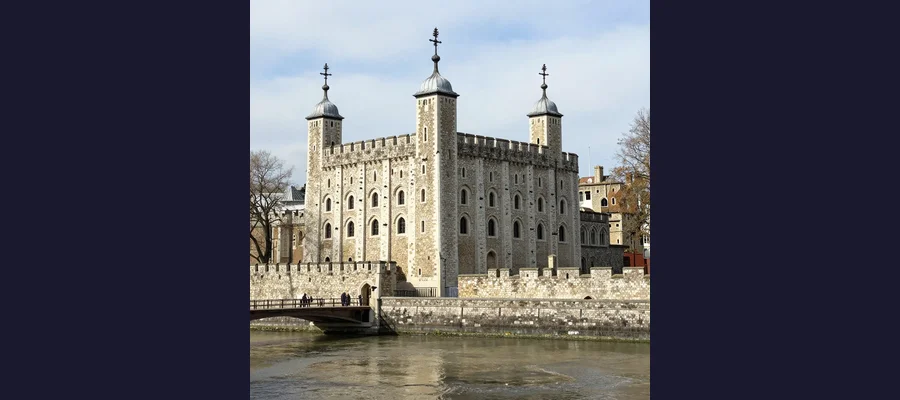

The Princes in the Tower: England's Most Enduring Royal Mystery

The Tower of London, where two young princes vanished during the summer of 1483, leaving behind one of history's most enduring mysteries.
In the summer of 1483, two boys — one twelve years old, the other just nine — vanished from the most heavily guarded building in England. Edward V, the newly proclaimed king, and his younger brother Richard, Duke of York, had been lodged in the Tower of London by their paternal uncle, Richard, Duke of Gloucester, in preparation for the young Edward's coronation. The coronation never happened. Within weeks, the boys had been declared illegitimate by an act of Parliament known as the Titulus Regius, their uncle had seized the throne as King Richard III, and the two princes — the sons of King Edward IV and Elizabeth Woodville, the rightful heirs to the English crown — were never seen in public again. Their disappearance is the oldest, most debated, and most emotionally charged unsolved mystery in English history. For over five hundred years, historians, novelists, playwrights, and amateur sleuths have argued about who killed the princes, whether they were killed at all, and what really happened behind the walls of the Tower during that fateful summer.
The Princes in the Tower is not merely a whodunit. It is a story about the nature of power in medieval England — a world where the throne was the ultimate prize, where dynastic rivalry was settled with blood, and where the fate of two children could determine the direction of an entire nation's history. It is a story that inspired William Shakespeare's most chilling villain, that divided the historical community into passionate camps, and that was dramatically reignited in 2012 when the remains of Richard III himself were discovered beneath a car park in Leicester. And it is a story that, despite five centuries of investigation, remains stubbornly, maddeningly unresolved. The bones have been examined, the documents have been pored over, the DNA has been analyzed — and still, no one can say with certainty what happened to Edward and Richard.
A Kingdom Without a King: The Crisis of 1483
The chain of events that led to the princes' disappearance began on April 9, 1483, when King Edward IV died unexpectedly at the age of forty, probably of a stroke or pneumonia, after twenty-two years on the English throne. His death triggered an immediate constitutional crisis. Edward's eldest son and heir, Edward V, was just twelve years old — old enough to be king in name, but far too young to rule in practice. Edward IV had designated his trusted brother, Richard, Duke of Gloucester, as Lord Protector — the man who would govern the kingdom until the young king came of age. It was a standard arrangement in medieval England. But what followed was anything but standard.
The young Edward V was at Ludlow Castle in the Welsh Marches, under the care of his maternal uncle, Anthony Woodville, Earl Rivers. As Edward's entourage began the journey south to London for the coronation, Gloucester intercepted them at Stony Stratford in Northamptonshire. In a swift and decisive move, Gloucester arrested Rivers and several of the young king's closest companions, effectively seizing control of Edward's person. He escorted the boy to London and installed him in the Tower of London — not as a prisoner, initially, but as the future king preparing for his coronation. The Tower was, after all, a royal residence as well as a fortress, and it was traditional for monarchs to lodge there before their coronation.
But Gloucester's ambitions were rapidly becoming clear. In June, the young king's younger brother, Richard, Duke of York, was also brought to the Tower — ostensibly to keep his brother company. Then, in a extraordinary session of Parliament, a document known as the Titulus Regius ("Title of the King") was promulgated, declaring that Edward IV's marriage to Elizabeth Woodville had been invalid because Edward had previously contracted to marry Eleanor Talbot, a daughter of the Earl of Shrewsbury. Under this interpretation, both princes were bastards, ineligible to inherit the throne. With the legitimate Yorkist heirs removed from the succession, the path was clear for Gloucester. On June 26, 1483, Parliament offered him the crown. He accepted and was crowned King Richard III on July 6, 1483.
👑 The Tower: Palace, Prison, and Tomb
The Tower of London is one of the most famous buildings in the world, and its role in English history is dual: it has served as both a royal palace and a prison for nearly a thousand years. Founded by William the Conqueror in the 1060s, the White Tower — the great stone keep at the center of the complex — was originally built to intimidate London's population and assert Norman dominance. By the fifteenth century, the Tower had become a complex of buildings serving multiple functions: royal residence, treasury, armory, record office, and, of course, prison. It was customary for monarchs to spend the night in the Tower before their coronation, processing to Westminster Abbey the following morning. This tradition is what gave Gloucester's decision to lodge the princes there an air of legitimacy — initially. But the Tower's other reputation, as a place from which people disappeared, was equally well established. The princes were far from the first to enter the Tower and never emerge.

The White Tower, where the young princes were lodged in the royal apartments during the summer of 1483.
The Last Sighting: When History Goes Silent
The last confirmed sighting of the two princes alive occurred sometime in the summer of 1483, likely in late June or early July. Multiple contemporary and near-contemporary sources report that the boys were seen less and less frequently in the Tower's grounds during this period, and eventually not at all. The Croyland Chronicle, a near-contemporary source written by a monk associated with the royal court, reports that by late summer, the princes were no longer visible. The Italian friar Dominic Mancini, who was in London during the summer of 1483, wrote that he had heard the princes had been withdrawn from public view and that there were rumors of their death.
What happened next is the heart of the mystery. There are no contemporary accounts of the princes' deaths. No confession, no witness, no body, no murder weapon. The historical record simply stops. The princes were alive in the Tower in early summer 1483. By autumn, they were never seen again. The silence is deafening — and it has been filled with speculation ever since.
The Suspects: Who Had the Means, Motive, and Opportunity?
- Richard III — The traditional suspect. As the princes' uncle and the man who had both declared them illegitimate and seized their throne, he had the clearest motive: so long as the princes lived, they were potential focal points for rebellion. He controlled the Tower and had absolute access to the boys. Most historians from the Tudor period to the present have considered Richard the most likely culprit, though the Richard III Society has vigorously disputed this.
- Henry Stafford, Duke of Buckingham — Richard's cousin and former ally, who later turned against him and led a rebellion. Some historians have suggested that Buckingham may have acted independently, killing the princes either on Richard's secret orders or on his own initiative to further his own ambitions. Buckingham was executed by Richard in November 1483 after his rebellion failed.
- Henry VII (Henry Tudor) — The Lancastrian claimant who defeated Richard III at the Battle of Bosworth in 1485 and founded the Tudor dynasty. Some "Ricardian" historians have argued that Henry, who married the princes' eldest sister Elizabeth of York, may have had the princes killed after taking the throne to eliminate rival claimants. However, this theory requires the princes to have survived in the Tower for over two years under Richard's custody — an unlikely scenario.
- Survival theories — Some researchers, most notably Philippa Langley through her Missing Princes Project, have argued that one or both princes may have survived, pointing to later historical figures who claimed to be the princes, including Perkin Warbeck, who claimed to be Richard, Duke of York, and led a significant rebellion against Henry VII in the 1490s.
📎 The Bones Under the Stairs: 1674 and 1933
In 1674, nearly two centuries after the princes' disappearance, workmen demolishing a staircase in the Tower of London discovered a wooden chest containing the skeletons of two children. The bones were widely assumed to be those of the princes and were subsequently interred in Westminster Abbey in an urn bearing the inscription: "Here lie interred the remains of Edward V King of England, and Richard, Duke of York." In 1933, the bones were examined by the archivist Lawrence Tanner and the anatomist William Wright, who concluded that they belonged to two children of approximately the right ages (roughly 12 and 9-11) and showed evidence of congenital dental conditions consistent with the Yorkist royal family. However, the examination was conducted with the limited forensic techniques of the 1930s, and many modern experts have questioned its conclusions. DNA analysis has never been performed on the remains — a fact that continues to frustrate researchers. In 2023, it was reported that the urn at Westminster Abbey had been scanned using modern imaging, but the results have not resolved the question. The bones may be the princes. They may be Roman-era burials, which are common in the Tower area. Without DNA testing, certainty is impossible.
The urn in Westminster Abbey, said to contain the bones of the two princes discovered in 1674.
The King in the Car Park: Richard III Rediscovered
On August 22, 1485, Richard III was killed at the Battle of Bosworth Field, the last English king to die in battle. His body was stripped, thrown across a horse, and brought to Leicester, where it was buried in the church of the Greyfriars monastery. When Henry VIII dissolved the monasteries in the 1530s, Greyfriars was demolished and Richard's grave was lost. For over five centuries, the location of England's most controversial king remained unknown — a fitting metaphor for a ruler whose reputation had been buried under layers of Tudor propaganda.
In August 2012, a team led by the writer and researcher Philippa Langley and the archaeologist Richard Buckley of the University of Leicester Archaeological Services excavated a car park in central Leicester, where historical maps suggested the Greyfriars church had stood. On the very first day of the dig, human remains were found. The skeleton showed severe scoliosis of the spine — a curvature consistent with the historical descriptions of Richard's "hunchback" condition — and multiple battle injuries, including a fatal wound to the back of the head. DNA analysis confirmed the identity beyond reasonable doubt: this was King Richard III. The discovery was a global media sensation, and Richard's remains were reinterred in Leicester Cathedral in March 2015 in a ceremony watched by millions.
🔍 Philippa Langley and the Missing Princes Project
The discovery of Richard III's remains transformed the debate about the princes. Philippa Langley, the driving force behind the Leicester excavation, subsequently launched the Missing Princes Project, a ten-year research initiative aimed at re-examining the evidence for the princes' fate using original archival sources rather than relying on later Tudor-era accounts. Langley's research has challenged the traditional narrative, arguing that contemporary evidence suggests the princes may have survived beyond 1483 and that their disappearance was exploited by political enemies of Richard III to tarnish his reputation. Her work has been both praised and criticized: supporters argue that she has uncovered neglected evidence that deserves serious consideration, while critics contend that she has overstated the significance of fragmentary sources and that the case for Richard III's guilt remains strong. What is not in dispute is that Langley's efforts have reinvigorated the debate and brought new attention to one of history's coldest cases — much like the decipherment of the Rosetta Stone unlocked ancient Egypt, or the discovery of the Dead Sea Scrolls reshaped our understanding of biblical history.
Why We Still Care: The Richard III Society and the Battle Over Memory
The question of Richard III's guilt or innocence has generated one of the most passionate and long-running debates in English historical scholarship. The Richard III Society, founded in 1924, has argued for over a century that Richard has been the victim of a deliberate Tudor propaganda campaign, designed to legitimize Henry VII's seizure of the throne by painting his predecessor as a monster. The Society points out that many of the most damning accounts of Richard's crimes — including Sir Thomas More's history and Shakespeare's play — were written during the Tudor period, decades or centuries after the events, by authors with strong political incentives to vilify the last Yorkist king.
- Contemporary silence — No contemporary record of the princes' deaths exists. No confession, no execution order, no body was ever produced by any government.
- Richard's motive — The princes were the primary threat to Richard's throne. As long as they lived, they could serve as figureheads for rebellion.
- Richard's character — While Tudor sources paint Richard as a monster, contemporary accounts suggest a complex figure: capable, loyal to his brother Edward IV for decades, and popular in the north of England.
- The Tudor interest — Henry VII had every reason to promote the story that Richard had murdered his nephews. It delegitimized the Yorkist line and justified the Tudor dynasty.
- The bones — The 1674 remains have never been subjected to modern DNA analysis, leaving their identity unconfirmed.
📜 The Question That Will Not Die
The Princes in the Tower is the coldest of cold cases — a crime (if it was a crime) committed over five hundred years ago, for which no forensic evidence survives, no witness was ever produced, and no confession was ever recorded. The most likely explanation, supported by the majority of historians, is that Richard III ordered the deaths of his nephews to eliminate them as threats to his throne. It was a ruthless, pragmatic act in a ruthless, pragmatic age, no different in kind from the many other acts of dynastic murder that punctuated English medieval history. But "most likely" is not "certain," and the gap between probability and proof is where the mystery lives. The discovery of Richard III's remains in a Leicester car park proved that history still holds surprises — that the ground beneath our feet can overturn centuries of assumption. Perhaps one day, DNA analysis of the bones in Westminster Abbey will finally settle the question. Perhaps new archival discoveries will illuminate the dark summer of 1483. Or perhaps the princes will remain what they have been for over five centuries: a question mark at the heart of English history, a reminder that the past does not always yield its secrets willingly. Like the vanished civilization of Atlantis, the identity of Jack the Ripper, the ancient mysteries of Stonehenge, the enduring quest for the Holy Grail, the unsolved resting place of Cleopatra, and the volcanic preservation at Pompeii, the Princes in the Tower remind us that some mysteries are defined not by their solution but by their persistence. Two boys walked into the Tower of London and became ghosts. Five hundred years later, their ghosts still haunt us.
Frequently Asked Questions
What happened to the Princes in the Tower?
The short answer is that nobody knows for certain. Edward V (aged 12) and Richard, Duke of York (aged 9), were last seen alive in the Tower of London during the summer of 1483, shortly after their uncle Richard, Duke of Gloucester, seized the throne as King Richard III. They were never seen in public again. The prevailing historical view is that they were murdered, probably on Richard's orders, but no contemporary evidence of their deaths has ever been found, and no bodies have been conclusively identified.
Was Richard III responsible for the princes' deaths?
Most historians believe so, though the evidence is circumstantial. Richard had the clearest motive (eliminating rival claimants to the throne), the means (he controlled the Tower), and the opportunity (the princes were in his custody). However, some scholars and the Richard III Society have argued that the evidence is insufficient to convict, that Tudor propaganda distorted the record, and that other suspects — including the Duke of Buckingham or even Henry VII — may have been responsible.
Whose bones were found in the Tower in 1674?
In 1674, workmen discovered a wooden chest containing the skeletons of two children under a staircase in the Tower of London. The bones were assumed to be those of the princes and were interred in Westminster Abbey. A 1933 forensic examination concluded that the remains were consistent with two boys of approximately the princes' ages, but the analysis was limited by the techniques available at the time. Modern DNA testing has never been performed, and the identity of the remains remains unconfirmed. Some experts have suggested they could be Roman-era burials, which are common in the Tower area.
What is the Missing Princes Project?
The Missing Princes Project is a research initiative launched by Philippa Langley — the researcher who led the effort to find Richard III's remains in Leicester — to re-examine the evidence surrounding the princes' fate using original archival sources. Langley's team has argued that contemporary evidence suggests the princes may have survived beyond 1483 and that their disappearance was exploited by political enemies of Richard III. The project's conclusions have been controversial but have reinvigorated debate about one of history's most enduring mysteries.
📖 Recommended Reading
Want to learn more? Check out The Princes in the Tower by Alison Weir on Amazon for a deeper dive into this fascinating topic. (As an Amazon Associate, we earn from qualifying purchases.)
References & Further Reading
- Wikipedia: Princes in the Tower — Comprehensive overview of the disappearance, suspects, theories, and cultural impact
- Wikipedia: Edward V — Biography of the uncrowned boy-king who vanished from the Tower of London
- Britannica: Princes in the Tower — Authoritative summary of the historical evidence and competing theories
- Philippa Langley: Revealing Richard III and the Missing Princes Project — Official site for the ongoing research initiative into the princes' fate
- Wikipedia: Richard III of England — The controversial king whose 2012 rediscovery in a Leicester car park reignited the debate
- Britannica: Richard III — Overview of the king's reign, his seizure of the throne, and the circumstances of the princes' disappearance
- Wikipedia: Titulus Regius — The parliamentary act that declared the princes illegitimate and justified Richard III's accession
Editorial note: reconstructions are continuously revised as imaging and inscription studies improve. See our Editorial Policy.